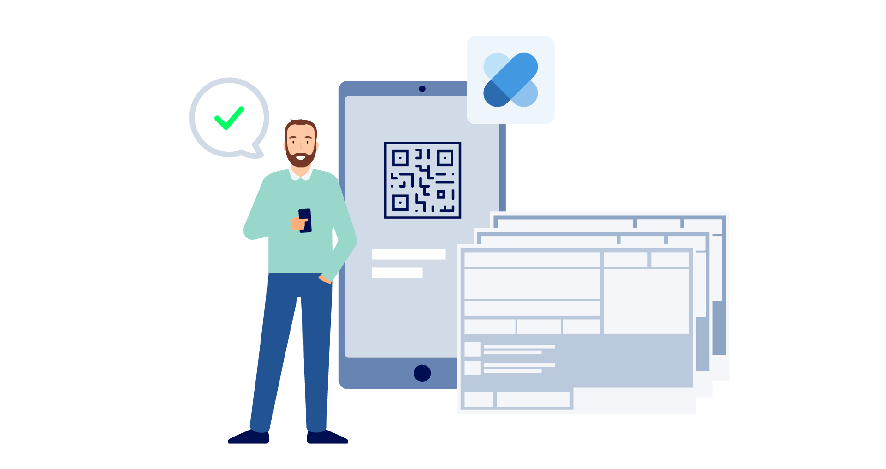

E-Rezept (eRX)
👥 Willkommen beim Fachteam eRX
Das eRezept (eRX) ist die moderne, digitale Verordnung für Medikamente. Es verbindet Praxis, Patient:in und Apotheke sicher über die TI – Ende-zu-Ende geschützt, nachvollziehbar und papierlos.

In der Sub‑Welt erklären wir dir zuerst die eRX‑Bausteine: Authentifizierung, Berechtigungsprüfung, Token/Task‑Modelle, DatenMatrix/QR‑Code, und die Einlösungsschnittstellen. Danach löst du produktspezifische Challenges - Teleporter bereit? Los geht's.
- Über den Teleporter gelangst du in die Aufgabenwelt rund um eRezept‑Verordnungen, QR‑Codes und Einlösungsprozesse.
- Dort erwartet dich als TI‑Ranger eine interaktive Story mit praxisnahen Aufgaben.
🧩 Story Line
Du bist im Urlaub, brauchst dringend dein Medikament und kontaktierst deine Praxis über den TI‑Messenger. Kurz Bedarf schildern, Identität geprüft – die Verordnung kommt als eRezept sicher in deiner eRezept‑App an. In der Ferienapotheke zeigst du das eRezept per App‑Code oder direkt digital vor. Die Apotheke ruft die Verordnung ab, prüft sie und gibt dir das Medikament aus: ohne Papier, ohne Umweg, mit klarer Dokumentation.
Entlang des Urlaubs‑Szenarios lernst du, wie aus Task.Id und AccessCode ein gültiger eRezept‑Token entsteht, wie daraus eine normgerechte DatenMatrix generiert wird und wie die Apotheke die Einlösung bestätigt. Keine Sorge: Wir spoilern nicht – du entdeckst die Schritte genau dann, wenn du sie brauchst.
Mit TI-Messenger und eRezept wird aus einer Urlaubspanik ein Routineprozess: sichere Kommunikation, schnelle Ausstellung, nahtlose Einlösung – genau dann, wenn du es brauchst.

Erfahre, wie du im eRezept (eRX) relevante Patientendaten findest, Verordnungen korrekt validierst und Berechtigungen prüfst – inklusive Erkennen möglicher Manipulationen. Zusätzlich lernst du, wie QR‑Code/DatenMatrix funktionieren und sicher genutzt werden, wie der passende FlowType gewählt wird und wie die Einlösung technisch bestätigt wird.